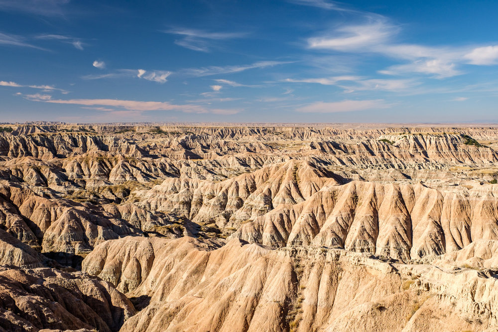
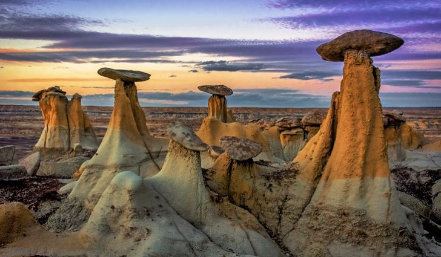
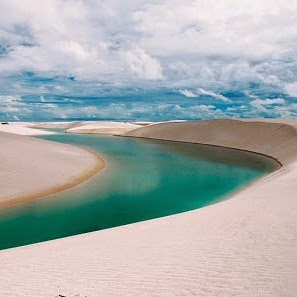
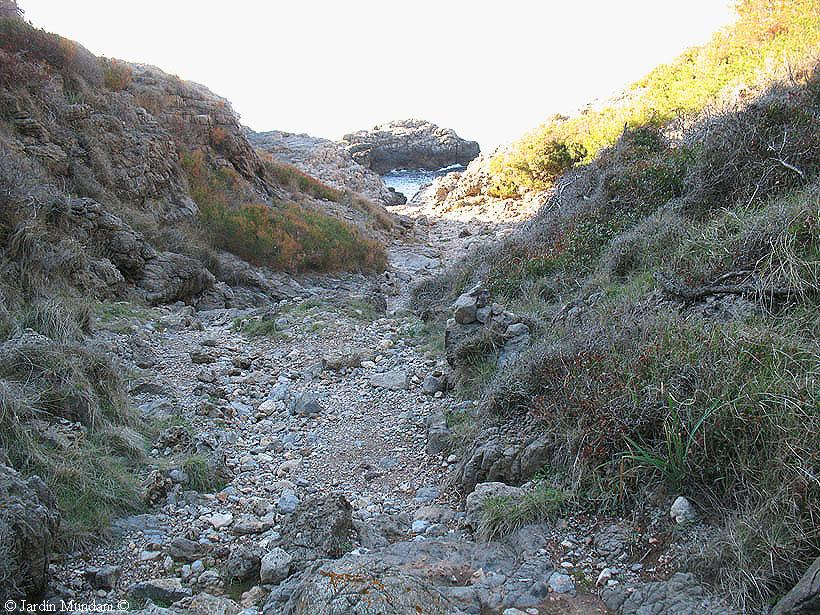

Def.: Los badlans son paisajes de aspecto ruiniforme en terrenos blandos
(arcillas, areniscas…) y secos, con escasa vegetación en los que predominan las cárcavas, los barrancos o las chimeneas
de hadas.
Def.: Los chimeneas de hada son torreones de roca
sedimentaria blanda que quedan aislados por la erosión de las aguas salvajes y que suelen estar coronados con un
bloque de roca más dura.
Def.: Hay dos tipos de torrentes los del océano
mediterráneo y los del desierto

Chimeneas de hadas

Torrentes

